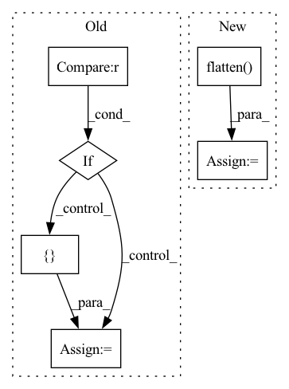

Pattern ID :37166
Before Change
neg_idxs = torch.randint(low=0, high=high, size=(bsz, self.n_negatives * tsz))
if self.sample_distance is not None and self.sample_distance < tsz :
neg_idxs += torch.cat(
[ torch.arange(start=1, end=tsz - self.sample_distance, device=neg_idxs.device, dtype=neg_idxs.dtype),
torch.arange(start=tsz - self.sample_distance, end=tsz - self.sample_distance * 2 - 1, step=-1,
device=neg_idxs.device, dtype=neg_idxs.dtype)After Change
with torch.no_grad():
if self.n_negatives > 0:
tszs = (
buffered_arange(tsz)
.unsqueeze(-1)
.expand(-1, self.n_negatives)
.flatten()
)
neg_idxs = torch.randint(
low=0, high=high - 1, size=(bsz, self.n_negatives * tsz)
)In pattern: SUPERPATTERN
Frequency: 4
Non-data size: 6
Instances Fragment ID: 107182258
Project Name: mohammadkhalifa/fairseq-tagging
Commit Name: 3335de5f441ee1b3824e16dcd98db620e40beaba
Time: 2020-02-29
Author: alexei.b@gmail.com
File Name: fairseq/models/wav2vec.py
M Class Name: Wav2VecPredictionsModel
N Class Name: Wav2VecPredictionsModel
M Method Name: sample_negatives(2)
N Method Name: sample_negatives(2)
M Parent Class: nn.Module
N Parent Class: nn.Module
M File Name: fairseq/models/wav2vec.py
N File Name: fairseq/models/wav2vec.py
M Start Line: 385
M End Line: 404
N Start Line: 583
N End Line: 629
Before Change
M[0:2, :], (input_res * 2, input_res * 2),
flags=cv2.INTER_CUBIC)
if det is not None :
// detection for bbox
bbox = get_bbox(img_for_crop, det)
width = bbox[2] - bbox[0]
height = bbox[3] - bbox[1]
center = np.array([(bbox[0] + bbox[2]) / 2.0,
(bbox[1] + bbox[3]) / 2.0])
else:
// Assume that the person is centerered in the image
height = img_for_crop.shape[0]
width = img_for_crop.shape[1]
center = np.array([ width // 2, height // 2After Change
human_ids = torch.logical_and(
predictions["labels"] == 1,
predictions["scores"] == predictions["scores"].max()).nonzero().squeeze(1)
bbox = predictions["boxes"][human_ids, :].flatten() .detach().cpu().numpy()
width = bbox[2] - bbox[0]
height = bbox[3] - bbox[1] Fragment ID: 107182256
Project Name: yuliangxiu/icon
Commit Name: 2117636e701293c457554812067b272fcf3f8252
Time: 2022-10-10
Author: yuliang.xiu@tuebingen.mpg.de
File Name: lib/pymaf/utils/imutils.py
M Class Name: AnonimousClass
N Class Name: AnonimousClass
M Method Name: process_image(5)
N Method Name: process_image(6)
M Parent Class:
N Parent Class:
M File Name: lib/pymaf/utils/imutils.py
N File Name: lib/pymaf/utils/imutils.py
M Start Line: 91
M End Line: 132
N Start Line: 111
N End Line: 128
Before Change
def encode(self, x: Tensor, h=None) -> Tuple[Tensor, List[Tensor], List[Tensor]]:
intermediate = []
if h is None :
h = [ NoneAfter Change
for enc_layer in self.enc:
intermediate.append(x)
x = enc_layer(x)
x_gru, h = self.gru(x.permute(0, 2, 3, 1).flatten( 2) , h)
x_gru = self.gru_fc(x_gru).unflatten(2, (-1, self.inner_ch)).permute(0, 3, 1, 2)
x = self.gru_skip(x) + x_gru
return x, intermediate, h Fragment ID: 107182269
Project Name: rikorose/deepfilternet
Commit Name: a006640875e1cd0ecad680c379a29276a62a5452
Time: 2022-04-12
Author: h.schroeter@pm.me
File Name: DeepFilterNet/df/multistagenet.py
M Class Name: FreqStage
N Class Name: FreqStage
M Method Name: encode(3)
N Method Name: encode(3)
M Parent Class: nn.Module
N Parent Class: nn.Module
M File Name: DeepFilterNet/df/multistagenet.py
N File Name: DeepFilterNet/df/multistagenet.py
M Start Line: 392
M End Line: 397
N Start Line: 400
N End Line: 405